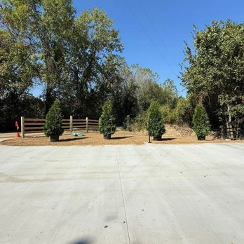
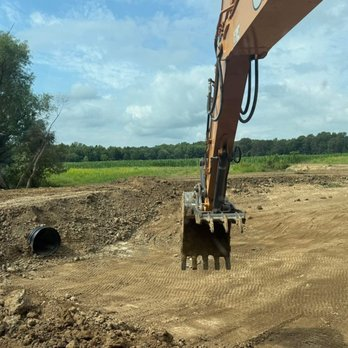
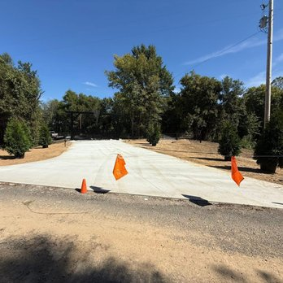
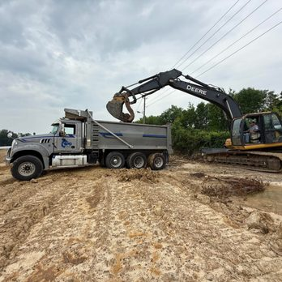
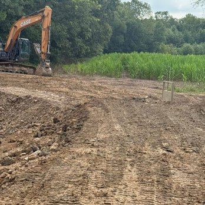
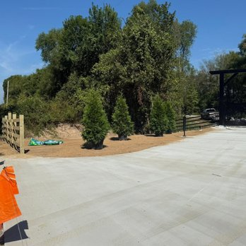
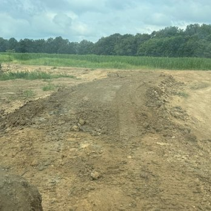
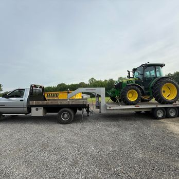
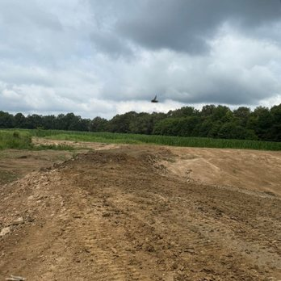

Selected work
Work you can
build on.
Land, equipment and finished details from projects across the Western Kentucky region.
01 In the field
Project gallery
Groundwork.
Made visible.
From early earthwork to clean access and finished details, each image represents a step toward a more useful property.

Excavation
West KentuckyDrainage & Site Shaping

Concrete
West PaducahProperty Access

Earthwork
West KentuckyMaterial Moving
Site Finish
West PaducahClean Completion

Preparation
West KentuckySite Clearing

Concrete
West PaducahFinished Detail



Your property could be next